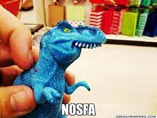

<ion-header>
  <ion-toolbar id="titulo" color="suces">
    <ion-buttons slot="start">
      <ion-back-button >
      </ion-back-button>
    </ion-buttons>
    <ion-title>
      Feedback
    </ion-title>
  </ion-toolbar>
</ion-header>

<ion-content fullscreen>
  <ion-card class="mt-5">
    
    <ion-card-header>
      <ion-card-title>Nos dê um feedback</ion-card-title>
      <ion-card-subtitle>O que você acha de nosso aplicativo?</ion-card-subtitle>
    </ion-card-header>
    <ion-card-content>
      <ion-item>
        <ion-range min="1" max="5" step="1" snaps="true" [(ngModel)]="warmth" color="danger">
          <ion-icon range-left small color="danger" name="thermometer"></ion-icon>
          <ion-icon range-right color="danger" name="thermometer"></ion-icon>
        </ion-range>
      </ion-item>
    </ion-card-content>
  </ion-card>
  <ion-button class="rounded mt-5" expand="full">Enviar Feedback</ion-button>
</ion-content>
